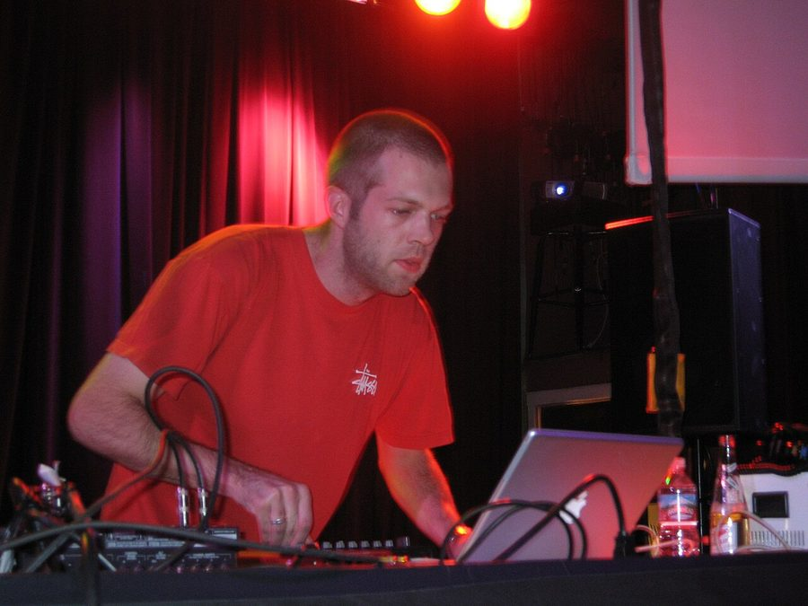

Subsonic Music Festival adds Alex Smoke & Format:B



The Subsonic Music Festival turned quite a few heads when it announced to the public earlier this month, set to take place at Barrington Tops’ Mountain Valley Resort in early December with an impressive lineup of underground electronic artists. Well, it’s just got that much more impressive with the announcement of another two acts who are joining the lineup.
German production duo Format:B have been part of the Berlin underground scene since the early 90s, really breaking through in the past few years and at Subsonic they’ll be playing alongside another new entry minimal stalwart Alex Smoke, famous for his work on the Soma imprint as well as pushing out against the edges of the underground with remixrs for acts like Depeche Mode, Mylo, Junior Boys and more.
The new additions join an already fine ensemble of artists that includes Salmonella Dub, Jamie Jones, K-Oscillate and more. Encouraging punters to get out of the city, the venue is around two-and-a-half hours outside of Sydney with a picture-perfect environment, as well as plenty of charming extras like workshops, markets, art-installations and of course, picture perfect natural surroundings.
Subsonic Music Festival takes over the Mountain Valley Resort in Barrington Tops on the first weekend of December. Tickets onsale now on ITM, check out the full lineup below:
Salmonella Dub
Jamie Jones
Format: B
Transwave
Tom Clark
Alex Smoke
Cesare vs Disorder
Antix/Fiord
Oka
Daniel Dreier
Tijuana Cartel
Synthetic
And many more TBA.